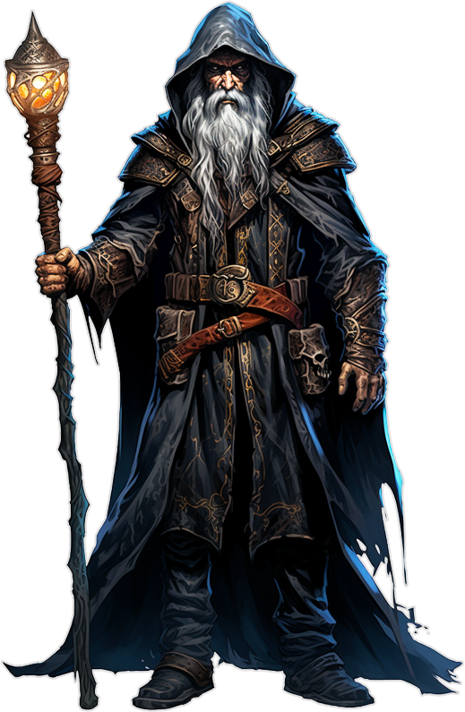
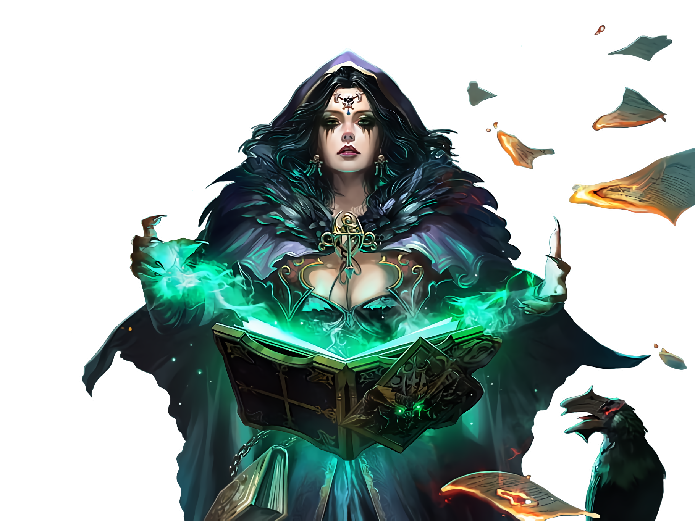

Mago (Wizard)

Vestida com uma túnica prata que denota seu posto, uma elfa fecha seus olhos para distanciar-se das distrações do campo de batalha e entoa o seu canto sereno. Dedos se agitam à sua frente, ela completa sua magia e lança uma pequena centelha de fogo em direção dos inimigos, explodindo em chamas o incêndio que engolfa os soldados.
Verificando mais de uma vez o seu trabalho, um humano inscreve um círculo mágico com giz no chão de pedra, então espalha pó de ferro ao longo de cada linha e curva graciosas. Quando o círculo está completo, ele murmura um longo encantamento. Um buraco se abre no espaço dentro do círculo, trazendo um cheiro de enxofre de outro plano bem distante.
Agachado no chão em um cruzamento da masmorra, um gnomo joga um punhado de pequenos ossos com símbolos místicos escritos, murmurando algumas palavras de poder sobre eles. Ele fecha os olhos para receber as visões mais claramente, acena com a cabeça lentamente, então abre os olhos e aponta para baixo, indicando a passagem à sua esquerda. Os magos são usuários de magia soberanos, unidos e definidos como uma classe pelas magias que conjuram.
Usufruindo de uma trama sutil de magia que permeia o cosmos, os magos conjuram magias explosivas de fogo, arcos de relâmpagos, enganos sutis e controle de mentes de força bruta. Sua magia invoca monstros de outros planos de existência, vislumbra o futuro ou transforma inimigos mortos em zumbis. Suas magias mais poderosas podem transformar uma substância em outra, evocar meteoros que caem do céu ou abrir portais para outros mundos.
Estudiosos do Arcanismo:
Selvagem e enigmático, variado nas formas e funções, o poder da magia atrai estudiosos que buscam dominar seus mistérios. Alguns aspiram ser como deuses, moldando a realidade à sua vontade. Embora, conjurar uma magia básica requeira meramente a pronúncia de algumas palavras estranhas, gestos fugazes, e às vezes um punhado ou um grupo de materiais exóticos, esses materiais mal denotam a experiência alcançada após anos de aprendizagem e incontáveis horas de estudo.
Magos vivem e morrem por suas magias. Todo o resto é secundário. Eles aprendem novas magias à medida que eles experimentam e crescem em experiência. Também podem aprender magias de outros magos, de tomos antigos ou escrituras, e de criaturas anciãs (como as fadas) que são imersas em magia.
O Fascínio do Conhecimento:
O dia a dia de um mago não é nada comum. O mais próximo de uma vida normal que um mago pode conseguir é ser um sábio ou professor em uma biblioteca ou universidade, ensinando aos outros os segredos do multiverso. Outros magos vendem seus serviços como videntes, trabalham com as forças militares, ou buscam uma vida de crimes ou dominação.
Mas o fascínio pelo conhecimento e poder atrai até mesmo os magos mais reservados para longe da segurança de seus laboratórios e bibliotecas, e os envia para ruínas e cidades perdidas. A maioria deles acredita que os magos de civilizações antigas conheciam segredos que se perderam pelas eras. Descobrir esses segredos pode abrir caminhos para um poder maior do que qualquer magia conhecida na presente época.
Criando um Mago:
Criar um personagem mago requer uma história com pelo menos um evento extraordinário. Como foi o seu primeiro contato com a magia? Como você descobriu que tinha a aptidão para isso? Você tem um talento natural ou estudou muito e praticou incessantemente? Você encontrou alguma criatura mágica ou um tomo muito antigo que ensinou a você o básico da magia?
O que tirou você de uma vida de estudos? Seu primeiro contato com o conhecimento mágico o deixou sedento por mais? Você obteve uma informação de uma fonte secreta de conhecimento, inacessível a outros magos? Talvez você esteja simplesmente ansioso para testar suas habilidades com magia recém descobertas frente aos perigos.
Tabela do Mago:
| Nível | Bônus de Proficiência | Benefícios | Truques Conhecidos | Espaços de Magia por Nível | ||||||||
|---|---|---|---|---|---|---|---|---|---|---|---|---|
| 1st | 2nd | 3rd | 4th | 5th | 6th | 7th | 8th | 9th | ||||
| 1st | +2 | Conjuração, Recuperação Arcana | 3 | 2 | - | - | - | - | - | - | - | - |
| 2nd | +2 | Tradição Arcana | 3 | 3 | - | - | - | - | - | - | - | - | 3rd | +2 | - | 3 | 4 | 2 | - | - | - | - | - | - | - |
| 4th | +2 | Melhoria na pontuação de Habilidade | 4 | 4 | 3 | - | - | - | - | - | - | - |
| 5th | +3 | - | 4 | 4 | 3 | 2 | - | - | - | - | - | - |
| 6th | +3 | Benefício da Tradição Arcana | 4 | 4 | 3 | 3 | - | - | - | - | - | - |
| 7th | +3 | - | 4 | 4 | 3 | 3 | 1 | - | - | - | - | - |
| 8th | +3 | Melhoria de na Pontuação de Habilidade | 4 | 4 | 3 | 3 | 2 | - | - | - | - | - |
| 9th | +4 | - | 4 | 4 | 3 | 3 | 3 | 1 | - | - | - | - |
| 10th | +4 | Benefício da Tradição Arcana | 5 | 4 | 3 | 3 | 3 | 2 | - | - | - | - |
| 11th | +4 | - | 5 | 4 | 3 | 3 | 3 | 2 | 1 | - | - | - |
| 12th | +4 | Melhoria de na Pontuação de Habilidade | 5 | 4 | 3 | 3 | 3 | 2 | 1 | - | - | - |
| 13th | +5 | - | 5 | 4 | 3 | 3 | 3 | 2 | 1 | 1 | - | - |
| 14th | +5 | Benefício da Tradição Arcana | 5 | 4 | 3 | 3 | 3 | 2 | 1 | 1 | - | - |
| 15th | +5 | - | 5 | 4 | 3 | 3 | 3 | 2 | 1 | 1 | 1 | - |
| 16th | +5 | Melhoria de na Pontuação de Habilidade | 5 | 4 | 3 | 3 | 3 | 2 | 1 | 1 | 1 | - |
| 17th | +6 | - | 5 | 4 | 3 | 3 | 3 | 2 | 1 | 1 | 1 | 1 |
| 18th | +6 | Dominar Magia | 5 | 4 | 3 | 3 | 3 | 3 | 1 | 1 | 1 | 1 |
| 19th | +6 | Melhoria de na Pontuação de Habilidade | 5 | 4 | 3 | 3 | 3 | 3 | 2 | 1 | 1 | 1 |
| 20th | +6 | Assinatura Mágica | 5 | 4 | 3 | 3 | 3 | 3 | 2 | 2 | 1 | 1 |
Recursos de Classe:
Como um Mago, você recebe os seguintes recursos de classe.
Hit Points
Hit Dice: 1d6 por nível de classe.
Hit Points no nível 1: 6 + seu modificador de constituição.
Hit nos níveis mais altos: 1d6(ou 4) + seu modificador constituição por nível de classe após o primeiro nível.
Proficiências
Armadura: Nenhuma.
Armas: adagas, dardos, fundas, bordões, bestas leves.
Ferramentas: Nenhuma.
Salvaguardas: Inteligência, Sabedoria.
Habilidades: Escolha duas entre Arcanismo, História, Intuição, Investigação, Medicina e Religião.
Equipamento
Você começa com os seguintes equipamentos, somados aos equipamentos garantidos pelo seu background (antecedentes).
(a) um bordão ou (b) uma adaga.
(a) uma bolsa de componentes ou (b) um foco arcano.
Um pacote do estudioso ou (b) um pacote de explorador.
um grimório
Conjuração
Como um estudante da magia arcana, você possui um livro de magias (ou grimório) que revela os primeiros vislumbres de seu verdadeiro poder. Consulte o Regras de Conjuração para as regras gerais sobre conjuração de magias e o Lista de Magias para conferir a lista de magias de mago.
Truques
A partir do 1º nível, você conhece três truques à sua escolha da lista de magias de mago. Você aprende truques adicionais conforme avança de nível, como mostra a coluna Truques Conhecidos na tabela O Mago.
Grimório
No 1º nível, você possui um grimório contendo seis magias de mago de 1º nível, à sua escolha. Um grimório não contém truques.
"O SEU GRIMÓRIO
As magias que você pode adicionar em seu grimório, à medida que sobe de nível, refletem suas próprias pesquisas arcanas, conduzidas à sua maneira, bem como as suas descobertas sobre a natureza do multiverso. Você pode encontrar outras magias durante suas aventuras, como um feitiço escrito em um pergaminho que estava no baú de um mago maligno, por exemplo, ou em um tomo empoeirado de uma biblioteca antiga.
Copiar uma Magia para o Grimório. Quando você encontrar uma magia de mago de 1° nível ou superior, você pode adicioná-la em seu grimório, desde que seja de um nível que você possua espaços de magia, além de dispor de tempo para decifrá-la e copiá-la. A magia copiada deve ser de um nível de magia que o mago possa preparar. Copiar uma magia para seu grimório envolve reproduzir suas formas básicas e então precisa decifrar a notação singular utilizada pelo mago que a escreveu. Você deve praticar a magia até entender os sons e gestos exigidos, para então transcrevê-la em seu grimório com sua própria notação. Para cada nível da magia a ser copiada, gasta-se 2 horas e 50 po. O custo representa os componentes materiais que você gasta para experimentar a magia até dominá-la, bem como as finas tintas utilizadas para escrevê-la. Uma vez gasto o tempo e o dinheiro, você pode preparar a magia copiada como as suas outras magias.
Substituir o Grimório. Você pode copiar uma magia de seu grimório em outro livro – por exemplo, se você quiser fazer uma cópia reserva de seu grimório. O processo é igual ao de copiar uma nova magia em seu grimório, só que mais rápido e fácil, pois o mago entende suas próprias notações e sabe como conjurar a magia. Você precisa gastar somente 1 hora e 10 po para cada nível de magia copiada. Se perder o seu grimório, você pode usar o mesmo procedimento para transcrever suas magias preparadas em um novo grimório. Preencher o restante do grimório exigirá que você encontre novas magias, como normalmente se faz. Por essa razão, muitos magos mantêm seus grimórios reservas em lugares seguros.
A Aparência do Grimório. Seu grimório é uma compilação de magias, com sua própria decoração e anotações de rodapé. Pode ser um livro de couro simples e funcional, recebido como presente de seu mestre, ou um tomo finamente encadernado com bordas douradas que você encontrou em uma antiga biblioteca, ou mesmo um conjunto de folhas soltas amontoadas após você perder seu grimório anterior em um acidente.
Preparando e Conjurando Magias
A tabela O Mago mostra quantos espaços de magia você possui para conjurar suas magias de 1º nível e superiores. Para conjurar uma dessas magias, você precisa usar um espaço do nível da magia ou superior. Você recupera todos os espaços gastos quando termina um descanso longo. Você prepara a lista de magias de mago que estarão disponíveis para serem conjuradas. Para tanto, você escolhe um número de magias de mago de seu grimório igual ao seu modificador de Inteligência + seu nível de mago (mínimo de uma magia). As magias precisam ser de um nível que você tenha espaços de magia.
Por exemplo, se você é um mago de 3º nível, você possui 4 espaços de magia de 1º nível e 2 espaços de magia de 2º nível. Com Inteligência 16, sua lista de magias preparadas pode incluir seis magias de 1º e 2º nível de seu grimório, em qualquer combinação. Se você preparar a magia de 1º nível mísseis mágicos, você poderá conjurá-la utilizando um espaço de 1º ou 2º nível de magia.
Conjurar a magia não a remove de sua lista de magias preparadas. Você pode mudar sua lista de magias preparadas quando terminar um descanso longo. Preparar uma nova lista de magias de mago requer que você gaste um tempo estudando seu grimório e memorizando as palavras e gestos, para efetivamente conjurar a magia: ao menos 1 minuto por nível de magia para cada magia da sua lista.
Habilidade de Conjuração
Inteligência é a sua habilidade para você conjurar suas magias de mago, pois os magos aprendem novas magias através de estudo e memorização. Você usa sua Inteligência sempre que alguma magia se referir a sua habilidade de conjurar magias. Além disso, você usa o seu modificador de Inteligência para definir a CD dos testes de resistência para as magias de mago que você conjura e quando você realiza uma jogada de ataque com uma magia.
CD para suas magias = 8 + bônus de proficiência + seu modificador de Inteligência
Modificador de ataque de magia = seu bônus de proficiência + seu modificador de Inteligência
Conjuração de Ritual
Você pode conjurar qualquer magia de mago como um ritual se ela possuir o descritor ritual, desde que a possua em seu grimório. Você não precisa ter essa magia preparada.
Foco de Conjuração
Você pode usar um foco arcano (encontrado na seção Equipamento de Aventureiro) como foco de conjuração das suas magias de mago.
Aprendendo Feitiços no 1º Nível e Superior
Cada vez que você ganha um nível de mago, você pode adicionar duas magias de mago de sua escolha ao seu livro de feitiços gratuitamente. Cada uma dessas magias deve ser de um nível para o qual você possui espaços de magia, conforme mostrado na tabela do Mago. Em suas aventuras, você poderá encontrar outros feitiços que você pode adicionar ao seu grimório (veja a barra lateral “Seu grimório”).
Recuperação Arcana
Você aprendeu como recuperar um pouco de sua energia mágica estudando seu grimório. Uma vez por dia, quando você terminar um descanso curto, você pode escolher espaços de magia gastos para recuperá-los. Os espaços gastos a serem recuperados podem ser de qualquer combinação de níveis de magia, desde que sejam iguais ou inferiores a metade de seu nível de mago (arredondado para cima) e nenhum deles seja de 6º ou superior. Por exemplo, se você é um mago de 4º nível, você pode recuperar até 2 espaços de magia gastos. Você pode recuperar o espaço de uma magia de 2º nível ou os espaços de duas magias de 1º nível.
Tradição Arcana
Quando alcança o 2º nível, você pode escolher uma Tradição Arcana, moldando sua prática de magia em uma das oito escolas: Abjuração, Adivinhação, Conjuração, Encantamento, Evocação, Ilusão, Necromancia e Transmutação, todas detalhadas no fim da descrição da classe. Sua escolha confere características no 2º nível e de novo no 6º, 10º e 14º nível.
Melhoria de na Pontuação de Habilidade
Quando você atinge o 4° nível e novamente no 8°, 12°, 16° e 19° nível, você pode aumentar um valor de habilidade, à sua escolha, em 2 ou você pode aumentar dois valores de habilidade, à sua escolha, em 1. Como padrão, você não pode elevar um valor de habilidade acima de 20 com essa característica.
Dominar Magia
No 18º nível, você alcança tamanha maestria em determinadas magias que pode conjurá-las à vontade. Você escolhe uma magia de mago de 1º nível e uma magia de mago de 2º nível de seu grimório. Você as conjura em seu nível mínimo, sem gastar espaços de magia quando as tiver preparadas. Caso queira, você pode conjurá-las com um espaço de nível superior, porém gastará espaços de magia, como normalmente se faz.
Assinatura Mágica
Quando alcançar o 20º nível, você adquire domínio completo de duas poderosas magias e pode conjurá-las sem muito esforço. Escolha duas magias de mago de 3º nível em seu grimório como sua assinatura mágica. Você sempre tem essas magias preparadas e elas não contam como magias preparadas em sua lista, além de você poder conjurar cada uma das magias escolhidas, uma vez ao dia, como magias de 3º nível, sem gastar nenhum espaço. Quando o fizer, você não poderá fazê-lo de novo antes de terminar um descanso curto ou longo. Se você quiser conjurar essas magias com espaços de níveis superiores, a magia gastará espaços de magia, como normalmente se faz.
Tradições Arcanas
O estudo de magia é antigo, remetendo às primeiras descobertas letais da magia. Está firmemente estabelecido nos mundos de D&D, com várias tradições dedicadas ao seu complexo estudo. As tradições arcanas mais comuns no multiverso envolvem as escolas de magia. Magos, através das eras, catalogaram milhares de magias, agrupando-as em oito categorias chamadas escolas, como descrito no capítulo 10. Em alguns lugares, essas tradições são literalmente escolas. Um mago pode estudar na Escola de Ilusão, enquanto outro estuda em um ponto diferente da cidade na Escola de Encantamento. Em outras instituições, elas funcionam mais como departamentos acadêmicos, com faculdades rivais competindo por estudantes e financiamentos. Mesmo os magos que treinam aprendizes na solidão de suas próprias torres, utilizam essa divisão da magia em escolas como um instrumento pedagógico, já que as magias de cada escola requerem um domínio de técnicas diferentes.
Escola de Abjuração
A Escola de Abjuração enfatiza magias que bloqueiam, expulsão ou protegem. Detratores dessa escola dizem que sua tradição trata de contradição, negação, ao invés de asserções positivas. Você compreende, no entanto, que terminar efeitos nocivos, proteger os fracos e banir influências malignas é tudo, menos um vazio filosófico. É uma vocação de orgulho e respeito. Chamados de abjuradores, membros dessa escola são procurados quando espíritos sinistros precisam ser exorcizados, quando locais importantes devem ser guardados contra espionagem mágica e quando portais para outros planos de existência precisam ser selados.
Abjuração Instruída
Quando você escolhe essa escola no 2º nível, o ouro e o tempo que você precisa gastar para copiar uma magia da escola de abjuração em seu grimório é reduzido à metade.
Proteção Arcana
A partir do 2° nível, você pode tecer a magia a sua volta para proteção. Quando você conjura uma magia de abjuração de 1° nível ou superior, você pode, simultaneamente, usar uma vertente do poder da magia para criar uma proteção mágica em si mesmo, que dura até você terminar um descanso longo. A proteção tem pontos de vida iguais ao dobro do seu nível de mago + seu modificador de Inteligência. Sempre que você sofrer dano, a proteção sofrerá o dano no lugar. Se o dano reduzir a proteção a 0 pontos de vida, você sofre qualquer dano remanescente. Quando a proteção estiver com 0 pontos de vida, ela não poderá mais absorver dano, mas a mágica permanece. Toda vez que você conjurar uma magia de abjuração de 1° nível ou superior, a proteção recupera um número de pontos de vida igual ao dobro do nível da magia. Uma vez que você tenha criado a proteção, você não pode criá-la novamente até terminar um descanso longo.
Proteção Projetada
A partir do 6° nível, quando uma criatura que você possa ver a até 9 metros sofrer dano, você pode usar sua reação para fazer com que sua Proteção Arcana absorva aquele dano. Se esse dano reduzir a proteção a 0 pontos de vida, a criatura protegida sofrerá qualquer dano remanescente.
Abjuração Aprimorada
A partir do 10° nível, quando você conjurar uma magia de abjuração que requeira que você realize um teste de habilidade como parte da conjuração da magia (como em contramágica e dissipar magia), você adiciona seu bônus de proficiência a esse teste de habilidade.
Resistência à Magia
A partir do 14° nível, você tem vantagem em testes de resistência contra magia. Além disso, você tem resistência contra o dano de magias.
Escola de Adivinhação
Os conselhos de um adivinho são procurados tanto pela realeza quanto pelos plebeus comuns, por todos que buscam uma compreensão mais clara do passado, presente e futuro. Como um adivinho, você se esforça para separar os véus do espaço, tempo e da consciência, de modo que você possa ver claramente. Você trabalha para dominar magias de discernimento, visão remota, conhecimento sobrenatural e previsão.
Adivinhação Intruída
Quando você escolhe essa escola no 2º nível, o ouro e o tempo que você precisa gastar para copiar uma magia da escola de adivinhação em seu grimório é reduzido à metade.
Prodígio
Começando no 2° nível, quando você escolhe essa escola, vislumbres do futuro começam a aparecer em sua consciência. Quando você termina um descanso longo, role dois d20s e anote os números rolados. Você pode substituir qualquer jogada de ataque, teste de resistência ou teste de habilidade feito por você ou por outra criatura que você possa ver por uma das rolagens de premunição. Você deve escolher fazer isso antes da rolagem e você pode substituir uma rolagem dessa forma apenas uma vez por rodada. Cada rolagem de premonição pode ser usada apenas uma vez. Quando você termina um descanso longo, você perde qualquer rolagem de premonição que não tenha sido usada.
Especialista em Adivinhação
A partir do 6° nível, conjurar magias de adivinhação se tornou tão fácil pra você que isso requer apenas uma fração do seu esforço de conjuração. Quando você conjura uma magia de adivinhação de 2° nível ou superior usando um espaço de magia, você recupera um espaço de magia gasto. O espaço de magia que você recupera deve ser de um nível inferior ao da magia conjurada e não pode ser maior que 5° nível.
O Terceiro Olho
A partir do 10° nível, você pode usar sua ação para aumentar seus poderes de percepção. Quando o fizer, escolha um dos benefícios a seguir, que dura até você ficar incapacitado ou realizar um descanso curto ou longo. Você não pode usar essa característica novamente até ter terminado um descanso longo.
Visão no Escuro.Você adquire visão no escuro com alcance de 18 metros, como descrito no capítulo 8.
.Visão Etérea. Você pode ver no Plano Etéreo com alcance de 18 metros.
Compreensão Maior. Você pode ler qualquer idioma.
Ver Invisibilidade. Você pode ver criaturas e objetos invisíveis a até 3 metros de você aos quais você tenha linha de visão.
Prodígio Maior
A partir do 14° nível, as visões em seus sonhos se intensificam e pintam um quadro mais preciso na sua mente do que está para acontecer. Você rola três d20s para a sua característica Prodígio, ao invés de dois.
Escola de Conjuração
Como um conjurador, você prefere magias que produzam objetos e criaturas do nada. Você pode conjurar nuvens esvoaçantes de gás mortal ou invocar criaturas de outros lugares para lutar por você. À medida que seu domínio cresce, você aprende magias de teletransportação e pode se teletransportar por vastas distâncias, até mesmo para outros planos de existência, em um instante.
Conjuração Instruída
Quando você escolhe essa escola no 2º nível, o ouro e o tempo que você precisa gastar para copiar uma magia da escola de conjuração em seu grimório é reduzido à metade.
Conjuração Menor
A partir do 2° nível, quando você escolhe essa escola, você pode usar sua ação para conjurar até um objeto inanimado em sua mão ou no chão, em um espaço desocupado que você possa ver, a até 3 metros de você. Esse objeto não pode ter mais de 90 centímetros de largura nem pesar mais de 5 quilos e sua forma deve ser de um objeto não-mágico que você tenha visto. O objeto é visivelmente mágico, emanando penumbra a 1,5 metro. O objeto desaparece depois de 1 hora, quando você usa essa característica novamente ou se ele sofrer ou causar qualquer dano.
Transposição Benigna
A partir do 6° nível, você pode usar sua ação para se teletransportar até 9 metros em um espaço desocupado que você possa ver. Alternativamente, você pode escolher um espaço ao alcance que seja ocupado por uma criatura Pequena ou Média. Se essa criatura for voluntária, vocês dois teletransportam-se, trocando de lugar. Uma vez que você usa essa característica, não pode usá-la novamente até terminar um descanso longo ou até conjurar uma magia de conjuração de 1° nível ou superior.
Conjuração Focada
Começando no 10° nível, enquanto você estiver concentrado em uma magia de conjuração, sua concentração não pode ser interrompida como resultado de ter sofrido dano.
Invocações Resistentes
A partir do 14° nível, qualquer criatura que você invocar ou criar com uma magia de conjuração, terá 30 pontos de vida temporários.
Escola de Encantamento
Como um membro da Escola de Encantamento, você afiou sua habilidade de entrar magicamente e seduzir outras pessoas e monstros. Alguns encantadores são pacifistas que fascinam os violentos para que larguem suas armas e enfeitiçam os cruéis para mostrar misericórdia. Outros são tiranos que dominam magicamente os involuntários, obrigando-os a servi-lo. A maioria dos encantadores está em algum lugar entre esses extremos.
Encantamento Instruído
Quando você escolhe essa escola no 2º nível, o ouro e o tempo que você precisa gastar para copiar uma magia da escola de encantamento em seu grimório é reduzido à metade.
Olhar Hipnotizante
A partir do 2° nível, quando você escolhe essa escola, suas palavras suaves e olhar encantador podem escravizar magicamente outra criatura. Com uma ação, escolha uma criatura que você possa ver a até 1,5 metro. Se o alvo puder ver ou ouvir você, ele deve ser bem sucedido num teste de resistência de Sabedoria contra uma CD igual das suas magias de mago, ou ficará enfeitiçado por você até o final do seu próximo turno. O deslocamento da criatura enfeitiçada cai para 0 e a criatura está incapacitada e visivelmente aturdida. Nos turnos subsequentes, você pode usar sua ação para manter esse efeito, estendendo sua duração até o final do seu próximo turno. No entanto, o efeito termina se você se afastar mais de 1,5 metro da criatura, se a criatura não puder nem ver nem ouvir você ou se a criatura sofrer dano. Assim que o efeito terminar, ou se a criatura for bem sucedida no teste de resistência inicial contra esse efeito, você não poderá usar essa característica nessa criatura novamente até terminar um descanso longo.
Encanto Instintivo
Começando no 6° nível, quando uma criatura que você puder ver a até 9 metros, realizar uma jogada de ataque contra você, você pode usar sua reação para desviar o ataque, contanto que exista outra criatura no alcance do ataque. O atacante deve realizar um teste de resistência de Sabedoria contra uma CD igual das suas magias de mago. Caso falhe, o atacante deve atacar a criatura mais próxima dele, excluindo você ou ele mesmo. Se existirem diversas criaturas próximas, o atacante escolhe qual deseja atacar. Em um sucesso, você não poderá usar essa característica contra o atacante novamente até terminar um descanso longo. Você deve escolher usar essa característica antes de saber se o ataque atingiu ou errou. Criaturas que não podem ser enfeitiçadas são imunes a esse efeito.
Dividir Encantamento
A partir do 10° nível, quando você conjurar uma magia de encantamento de 1° nível ou superior que tenha uma única criatura como alvo, você pode fazer com que ela afete uma segunda criatura.
Alterar Memórias
No 14° nível, você ganha a habilidade de tornar uma criatura inconsciente da sua influência mágica sobre ela. Quando você conjura uma magia de encantamento para enfeitiçar uma ou mais criaturas, você pode alterar a compreensão de uma criatura para que ela continue sem saber que está sendo enfeitiçada. Além disso, assim que a magia expirar, você pode usar sua ação para tentar fazer com que a criatura escolhida esqueça parte do tempo que permaneceu enfeitiçada. A criatura deve ser bem sucedida num teste de resistência de Inteligência contra uma CD igual das suas magias de mago ou perderá uma quantidade de horas da sua memória igual a 1 + seu modificador de Carisma (mínimo 1). Você pode fazer com que a criatura esqueça menos tempo e o total de tempo não pode exceder a duração da sua magia de encantamento.
Escola de Evocação
Você foca seu estudo para criar poderosos efeitos elementais, como um frio cortante, uma chama intensa, um trovão estrondoso, um relâmpago devastador e ácido ardente. Alguns evocadores encontram emprego nas forças militares, servindo como artilharia para explodir fileiras inimigas de longe. Outros usam seu poder espetacular para proteger os fracos, enquanto alguns buscam o ganho próprio como bandidos, aventureiros ou aspirantes de tiranos.
Evocação Instruída
Quando você escolhe essa escola no 2º nível, o ouro e o tempo que você precisa gastar para copiar uma magia da escola de evocação em seu grimório é reduzido à metade.
Esculpir Magias
A partir do 2º nível, você pode criar bolsões de segurança relativa contra os efeitos de suas magias de evocação. Quando você conjurar uma magia de evocação que afeta outras criaturas que você possa ver, você pode escolher um número delas igual a 1 + o nível da magia. As criaturas escolhidas passam automaticamente em seus testes de resistência contra a magia conjurada e elas não sofrem dano se normalmente sofreriam metade em um sucesso no teste de resistência.
Truque Potente
A partir do 6º nível, seus truques de dano afetam até mesmo as criaturas que evitariam a força daquele efeito. Quando uma criatura passa em um teste de resistência de seus truques, ela sofre metade do dano (se existir), mas não sofre nenhum efeito adicional.
Evocação Potencializada
A partir do 10º nível, você pode adicionar seu modificador de Inteligência no resultado das jogadas de dano de qualquer magia de evocação de mago que você conjurar. O bonus de dano se aplica a uma rolagem de dano da magia, não à múltiplas rolagens.
Sobrecarga
A partir do 14º nível, você pode aumentar o poder de suas magias mais simples. Quando você conjurar uma magia de mago de 5º nível ou inferior (exceto truques) que cause dano, a magia causa o dano máximo. A primeira vez que fizer isso, você não sofre qualquer efeito adverso. Porém, se usar de novo essa característica antes de terminar um descanso longo, você sofre 2d12 de dano necrótico para cada nível de magia, imediatamente após conjurá-la. Cada vez que você usar essa característica antes de terminar um descanso longo, o dano necrótico por nível da magia aumenta em 1d12. Esse dano ignora qualquer resistência ou imunidade.
Escola de Ilusão
Você focou seus estudos em magias que ofuscam os sentidos, confundem a mente e enganam até mesmo os povos mais sábios. Sua mágica é sutil, mas as ilusões criadas pela sua mente afiada fazem o impossível parecer real. Alguns ilusionistas – incluindo muitos magos gnomos – são vigaristas benignos que usam suas magias para entreter. Outros são mestres mais sinistros da enganação, usando suas ilusões para apavorar e iludir os outros para ganhos pessoais.
Ilusão Instruída
Quando você escolhe essa escola no 2º nível, o ouro e o tempo que você precisa gastar para copiar uma magia da escola de ilusão em seu grimório é reduzido à metade.
Ilusão Menor Aprimorada
A partir do 2° nível, quando você escolhe essa escola, você aprende o truque ilusão menor. Se você já conhece esse truque, você aprende um truque de mago diferente, à sua escolha. O truque não conta no número de truque que você conhece. Quando você conjurar ilusão menor, você pode criar tanto um som quanto uma imagem com uma única conjuração da magia.
Ilusões Moldáveis
A partir do 6° nível, quando você conjura uma magia de ilusão que tenha duração de 1 minuto ou maior, você pode usar sua ação para mudar a natureza da ilusão (usando os parâmetros normais da magia para a ilusão), considerando que você pode ver a ilusão.
Eu Ilusório
Começando no 10° nível, você pode criar uma duplicata ilusória de si mesmo em um instante, como uma reação instintiva ao perigo. Quando uma criatura realizar uma jogada de ataque contra você, você pode usar sua reação para interpor a duplicata ilusória entre o atacante e você. O ataque erra você automaticamente, e então, a ilusão se dissipa. Uma vez que você usa essa característica, não pode usá-la novamente até terminar um descanso longo.
Realidade Ilusória
A partir do 14° nível, você aprendeu o segredo de como tecer magia sombria em suas ilusões para torná-las semirreais. Quando você conjura uma magia de ilusão de 1° nível ou superior, você pode escolher um objeto inanimado e não-mágico que é parte da ilusão e tornar esse objeto real. Você pode fazer isso no seu turno, com uma ação bônus, enquanto a magia estiver em efeito. O objeto permanece real por 1 minuto. Por exemplo, você pode criar uma ilusão de uma ponte sobre um abismo e depois torná-la real tempo suficiente para que seus aliados a atravessem. O objeto não pode causar dano ou qualquer tipo de ferimento direto a ninguém.
Escola de Necromancia
A Escola de Necromancia explora as forças cósmicas da vida, morte e morte-vida. À medida que você foca seus estudos nessa tradição, você aprende a manipular a energia que anima todas as coisas vivas. Enquanto progride, você aprende a retirar a força vital de uma criatura enquanto sua magia destrói seu corpo, transformando a energia vital em poder mágico que você pode manipular. A maioria das pessoas veem necromantes como ameaças, ou até mesmo vilões, devido a sua associação intima com a morte. Nem todos os necromantes são malignos, mas as forças que eles manipulam são consideradas tabu por diversas sociedades.
Necromancia Instruída
Quando você escolhe essa escola no 2º nível, o ouro e o tempo que você precisa gastar para copiar uma magia da escola de necromancia em seu grimório é reduzido à metade.
Colheita Sinistra
A partir do 2° nível, você ganha a habilidade de ceifar a energia vital das criaturas que você mata com suas magias. Uma vez por turno, quando você matar uma ou mais criaturas com uma magia de 1° nível ou superior, você recupera uma quantidade de pontos de vida igual ao dobro do nível da magia ou o triplo do seu nível, se a magia pertencer a Escola de Necromancia. Você não recebe esse benefício por matar constructos ou mortosvivos.
Escravos Mortos-Vivos
No 6° nível, você adiciona a magia animar mortos ao seu grimório se você ainda não a possuir. Quando você conjurar animar mortos, você pode escolher um corpo ou pilha de ossos adicional, criando outro zumbi ou esqueleto, como apropriado. Toda vez que você criar um morto-vivo através de uma magia de necromancia, ele terá benefícios adicionais:
O máximo de pontos de vida da criatura aumenta numa quantidade igual a seu nível de mago.
A criatura adiciona seu bônus de proficiência as suas jogadas de dano.
Acostumado à Morte-Vida
A partir do 10° nível, você terá resistência a dano necrótico e seu máximo de pontos de vida não pode ser reduzido. Você gastou tanto tempo lidando com mortosvivos e com as forças que os animam que você se acostumou a alguns dos seus piores efeitos.
Comandar Mortos-Vivos
A partir do 14° nível, você pode usar magia para trazer mortos-vivos ao seu controle, até os criados por outros magos. Com uma ação, você pode escolher um morto-vivo que você possa ver a até 18 metros. Essa criatura deve realizar um teste de resistência de Carisma com CD igual das suas magias de mago. Se ela for bem sucedida, você não poderá usar essa característica nela novamente. Se ela falhar, ela se tornará amistosa a você e obedecerá seus comandos até você usar essa característica novamente. Mortos-vivos inteligentes são difíceis de controlar dessa forma. Se o alvo tiver Inteligência 8 ou superior, ele terá vantagem no teste de resistência. Se ele fracassar no teste de resistência e tiver Inteligência 12 ou superior, ele poderá repetir o teste de resistência ao final de cada hora até que obtenha sucesso e se liberte.
Escola de Transmutação
Você é um estudante de magias que modificam energia e matéria. Para você, o mundo não é uma coisa fixa, mas sim eminentemente mutável e você se deleita em ser um agente da mudança. Você empunha a matéria-prima da criação e aprendeu tanto formas físicas quanto qualidades mentais. Sua magia lhe dá as ferramentas para se tornar o ferreiro na forja da realidade. Alguns transmutadores são vigaristas ou brincalhões, transformando pessoas em sapos e transformando cobre em prata por diversão e lucro ocasional. Outros perseguem seus estudos mágicos com uma seriedade mórbida, buscando o poder dos deuses de criar e destruir mundos.
Transmutação Instruída
Quando você escolhe essa escola no 2º nível, o ouro e o tempo que você precisa gastar para copiar uma magia da escola de transmutação em seu grimório é reduzido à metade.
Alquimia Menor
A partir do 2° nível, quando você escolhe essa escola, você pode alterar temporariamente as propriedades físicas de um objeto não-mágico, alterando-o de uma substancia para outra. Você realiza um procedimento alquímico especial em um objeto composto inteiramente de madeira, pedra (mas não uma pedra preciosa), ferro, cobre ou prata, transformando-o em um material diferente dentre esses. Para cada 10 minutos que você gastar realizando esse procedimento, você pode transformar 30 centímetros cúbicos de material. Após 1 hora, ou até você perder sua concentração (como es estivesse se concentrando em uma magia) o material reverte à sua substancia original.
Pedra de Transmutador
A partir do 6° nível, você pode gastar 8 horas criando uma pedra de transmutador que armazena magia de transmutação. Você pode se beneficiar da pedra ou dá-la para outra criatura. Uma criatura ganha um benefício, à sua escolha, enquanto a pedra estiver em sua posse. Quando você cria a pedra, escolha um benefício dentre as opções a seguir:
- Visão no escuro com alcance de 18 metros, como descrito no capítulo 8
- Um aumento de 3 metros no deslocamento enquanto a criatura não estiver sobrecarregada
- Proficiência em testes de resistência de Constituição
- Resistência a dano de ácido, frio, fogo, elétrico ou trovejante (escolhido por você quando escolhe esse benefício)
Cada vez que você conjurar uma magia de conjuração de 1° nível ou superior, você pode mudar o efeito da sua pedra, se ela estiver em sua posse. Se você criar uma nova pedra de transmutador, a anterior para de funcionar.
Metamorfo
No 10° nível, você adiciona a magia metamorfose ao seu grimório, se você ainda não a possuir. Você pode conjurar metamorfose sem gastar um espaço de magia. Quando o fizer, você só pode escolher a si mesmo como alvo e se transforma em uma besta com nível de desafio 1 ou menor. Quando você conjurar metamorfose dessa forma, você não poderá fazê-lo novamente até terminar um descanso curto ou longo, apesar de ainda poder conjurá-la normalmente usando espaços de magia disponíveis.
Mestre Transmutador
A partir do 14° nível, você pode usar sua ação para consumir a reserva de magia de transmutação armazenada dentro da sua pedra de transmutador em uma única explosão. Quando o fizer, escolha um dos seguintes efeitos. Sua pedra de transmutador é destruída e não pode ser refeita até você terminar um descanso longo.
Transformação Maior. Você pode transmutar um objeto não-mágico – não maior que 1,5 metro cubico – em outro objeto não-mágico de tamanho e massa similares e de valor igual ou inferior. Você deve gastar 10 minutos manipulando o objeto para transformá-lo.
Panaceia. Você remove todas as maldições, doenças e venenos afetando uma criatura que você tocar com sua pedra de transmutador. A criatura também recupera todos os seu pontos de vida.
Restaurar Vida. Você pode conjurar reviver mortos em uma criatura que você tocar com sua pedra de transmutador, sem gastar espaço de magia ou precisar ter a magia no seu grimório.
Restaurar Juventude. Você toca a pedra de transmutador em uma criatura voluntária e a idade aparente da criatura é reduzida em 3d10 anos, para o mínimo de 13 anos. Esse efeito não estende a vida útil da criatura.